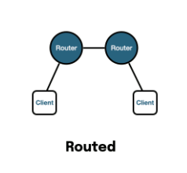
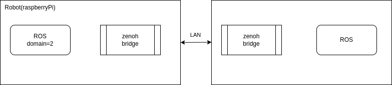

bridge
ros
router
zenoh
ROS Zenoh Bridge
Connect two ROS machine via zenoh bridgejust read the readme
versions
ubuntu 22.04
ROS humble
cycloneDDS
zenoh 1.2.0
zenoh-plugin-ros2dds 1.2.0
ROS test
Run pub/sub without any restriction between the machine
Remote machine
Local machine
Using Zenoh
Close/ restrict the DDS traffic between machine
Config remote machine as another domain ROS_DOMAIN_ID=2 or set it ROS_LOCALHOST_ONLY=1
Run zenoh bridge in router mode (default)


Remote machine
publisher ROS_DOMAIN_ID = 2 RMW_IMPLEMENTATION = rmw_cyclonedds_cpp ros2 topic pub /my_int32_topic std_msgs/msg/Int32 "{ data: 10 }"
# OR
ROS_LOCALHOST_ONLY = 1 RMW_IMPLEMENTATION = rmw_cyclonedds_cpp ros2 topic pub /my_int32_topic std_msgs/msg/Int32 "{ data: 10 }"
zenoh bridge ROS_DOMAIN_ID = 2 ROS_DISTRO = humble ./zenoh-bridge-ros2dds
# OR
ROS_LOCALHOST_ONLY = 1 ROS_DISTRO = humble ./zenoh-bridge-ros2dds
using ROS_LOCALHOST_ONLY
ROS humble with cyclone dds it work without multicast enabling
(zenoh bridge has info message tokio-runt: selected interface "lo" is not multicast-capable: disabling multicast)
Enable multicast on lo using
ip link set lo multicast on
Local machine
zenoh bridge ROS_DISTRO = humble ./zenoh-bridge-ros2dds -e tcp/10.0.0.10:7447
subscriber topic echo /my_int32_topic
client bridge connect to remote bridge
The zenoh-bridge-ros2dds is by default started in router mode
autoconnect
autoconnect.json5 {
scouting : {
multicast : {
enabled : true ,
autoconnect : { router : [ "router" ] },
listen : true ,
},
},
}
Warning
l.o multicast disabled by defaultROS_LOCALHOST_ONLY=1
Remote machine
publisher ROS_DOMAIN_ID = 2 RMW_IMPLEMENTATION = rmw_cyclonedds_cpp ros2 topic pub /my_int32_topic std_msgs/msg/Int32 "{ data: 10 }"
zenoh bridge ROS_DOMAIN_ID = 2 ROS_DISTRO = humble ./zenoh-bridge-ros2dds --config autoconnect.json5
Local machine
zenoh bridge ROS_DISTRO = humble ./zenoh-bridge-ros2dds --config autoconnect.json5
subscriber topic echo /my_int32_topic
Bridge Admin
Running Bridge with --rest-http-port 8000 expose web interface to query bridge state
Description
http://\<bridge-IP>:8000/@/local/ros2/node/**
ROS nodes with their interfaces discovered by the bridge
http://\<bridge-IP>:8000/@//ros2/node/ *
ROS nodes discovered by all bridges
http://\<bridge-IP>:8000/@/local/ros2/route/**
All routes between ROS interfaces and Zenoh established by the bridge
more
http://localhost:8001/@/*/ros2/node/** "subscribers":[{"name":"/my_int32_topic","type":"std_msgs/msg/Int32"}]}
"publishers":[{"name":"/my_int32_topic","type":"std_msgs/msg/Int32"},
Config
zenoh config from github
Allow /Deny
Allow / Deny
In the config we set Allow key or Deny key
Both of them not work
allow.json5 {
plugi ns : {
ros 2 dds : {
pub_max_ fre que n cies : {
publishers : [ "/my_int32_topic" ],
subscribers : [],
service_servers : [],
service_clie nts : [],
ac t io n _servers : [],
ac t io n _clie nts : [],
},
},
scou t i n g : {
mul t icas t : {
e na bled : true ,
au t oco nne c t : { rou ter : [ "router" ] },
lis ten : true ,
},
},
},
}
bridge log tokio-runtime-worker ThreadId( 04 ) zenoh_plugin_ros2dds: Node /_ros2cli_5087 declares Publisher /my_int32_topic: std_msgs/msg/Int32 - Allowed
tokio-runtime-worker ThreadId( 04 ) zenoh_plugin_ros2dds::routes_mgr: Route Publisher ( ROS:/my_int32_topic -> Zenoh:my_int32_topic) created
pub_max_frequencies
Config maximum publish rate for topic
allow.json5 {
plugi ns : {
ros 2 dds : {
pub_max_ fre que n cies : [
"/my_int32_topic=0.5" # hz
]
},
scou t i n g : {
mul t icas t : {
e na bled : true ,
au t oco nne c t : { rou ter : [ "router" ] },
lis ten : true ,
},
},
}
}
topic hz /my_int32_topic
rate: 0 .500
min: 2 .001s max: 2 .001s std dev: 0 .00019s window: 2
rate: 0 .500
min: 2 .001s max: 2 .001s std dev: 0 .00017s window: 3